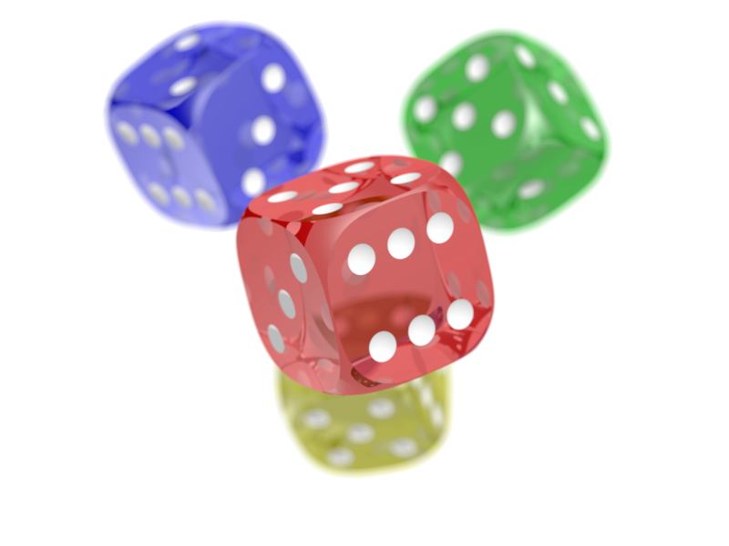

6 Figures
For full details and advanced options, see the official Quarto Figures documentation:
6.1 Basic Figure
The example below creates:
- a numbered figure,
- a visible caption,
- alternative text for screen readers,
- a cross-reference target.
{#fig-dice fig-alt="This is descriptive alt text"}
@fig-dice shows four multi-coloured dice.
Figure 6.1 shows four multi-coloured dice.
In Quarto, an image becomes a figure whenever it has a caption and appears by itself in a paragraph.
6.2 Layout Options
6.2.1 Size
{#fig-dice fig-alt="This is descriptive alt text" width=20%}
{#fig-dice fig-alt="This is descriptive alt text" width=2cm}6.2.2 Subfigures
Subfigures allow multiple related images to be grouped under a single figure number with individual sub-captions.
::: {#fig-dice-layout layout-ncol=2}
{#fig-dice-left fig-alt="This is descriptive alt text"}
{#fig-dice-right fig-alt="This is descriptive alt text"}
Here is the main caption for the whole figure.
:::Notes:
- Individual image captions become sub-captions.
- The final paragraph becomes the overall figure caption.
- Blank lines between images and captions are required.
- You can also create more custom layouts:
{layout-ncol=3},{layout-nrow=2}
6.2.3 Two Images Above One Wide Image
For brevity in the next few examples, I have just used pseduocode {{image.png}} to show where the image should be
::: {layout="[[1,1],[1]]"}
{{image1.png}}
{{image2.png}}
{{image3.png}}
:::6.2.4 Unequal Widths
::: {layout="[[70,30],[100]]"}
{{large.png}}
{{small.png}}
{{full.png}}
:::6.2.5 Adding Space Between Elements
::: {layout="[[40,-20,40],[100]]"}
{{left.png}}
{{right.png}}
{{bottom.png}}
:::Negative values create spacing between items.
6.3 Figures from code
Figures generated from Python, R, or Julia code are automatically treated as figures. See Section 8.5 for examples
6.4 Figure Divs
Any content can be treated as a figure by enclosing it in a fenced div with an identifier beginning with fig-. This is useful for:
- embedded videos
- interactive visualisations
- HTML widgets
- custom content that is not a simple image
These only work for the HTML output and not PDF or Word. If you include a figure div, you should also include a fallback link to the resource in the caption to support the other output formats.
::: {#fig-video}
<iframe width="560" height="315" src="https://www.youtube.com/embed/EbAAmrB0luA?si=jYVDsTRDNb_8aj9X" title="YouTube video player" frameborder="0" allowfullscreen></iframe>
The final paragraph becomes the figure caption. You should include [link to the video here](www.youtube.com)
:::6.5 Tikz figures
Include link to Tikz examples.